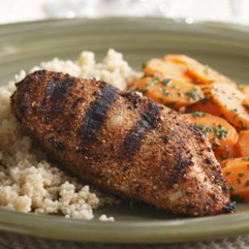

Recipes

Spicy Tunisian Grilled Chicken
This spicy rub of coriander, caraway and hot pepper is lovely on grilled chicken, as we use it here, or try it on pork tenderloin or salmon. If you prefer your food less spicy, reduce the amount of crushed red pepper.
Makes: 4 servings
Active Time: 5 minutes
Total Time: 25 minutes
INGREDIENTS
- 2 teaspoons coriander seeds
- 2 teaspoons caraway seeds
- 3/4 teaspoon crushed red pepper
- 3/4 teaspoon garlic powder
- 1/2 teaspoon kosher salt
- 1-1 1/4 pounds boneless, skinless chicken breast
PREPARATION
Grind coriander seeds, caraway seeds and crushed red pepper in a spice grinder (or mortar and pestle) until finely ground. Transfer to a small bowl and stir in garlic powder and salt.
Coat both sides of chicken with the rub up to 30 minutes before grilling or broiling.
Preheat grill to medium-high or position a rack in upper third of oven and preheat broiler.
To grill: Oil the grill rack (see Tip). Grill the chicken, turning once, until an instant-read thermometer inserted into the thickest part registers 165°F, 4 to 8 minutes per side.
To broil: Line a broiler pan (or baking sheet) with foil and coat with cooking spray. Place the chicken on the foil. Broil, watching carefully and turning at least once, until an instant-read thermometer inserted into the thickest part registers 165°F, 10 to 15 minutes total.
TIPS & NOTES
Make Ahead Tip: Store the rub in an airtight container for up to 3 months; coat the chicken with the rub up to 30 minutes before grilling or broiling.
Note: It’s difficult to find an individual chicken breast small enough for one portion. Removing the thin strip of meat from the underside of a 5-ounce breast—the chicken tender—removes about 1 ounce of meat and yields a perfect 4-ounce portion. Wrap and freeze the tenders and when you have gathered enough, use them in a stir-fry or for oven-baked chicken fingers. If you can only find chicken breasts closer to 8- to 9-ounce each, you’ll only need 2 breasts for 4 servings—cut each one in half before cooking.
Tip: Oiling a grill rack before you grill foods helps ensure that the food won’t stick. Oil a folded paper towel, hold it with tongs and rub it over the rack. (Do not use cooking spray on a hot grill.) When grilling delicate foods like tofu and fish, it is helpful to coat the food with cooking spray.
NUTRITION
Per serving: 131 calories; 3 g fat (1 g sat, 1 g mono); 63 mg cholesterol; 2 g carbohydrates; 0 g added sugars; 23 g protein; 1 g fiber; 195 mg sodium; 228 mg potassium.
Carbohydrate Servings: 0
Exchanges: 3 lean meat